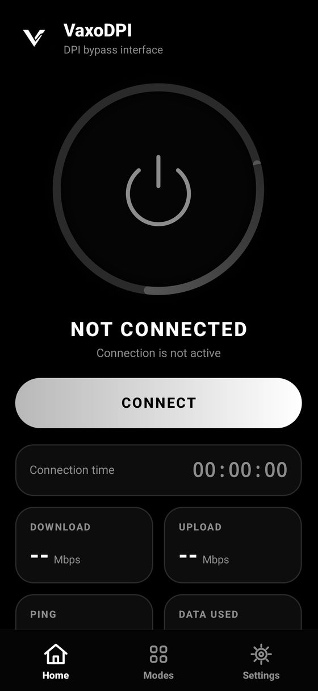

Open what is blocked. One tap, no root, no account.

Connect and the bypass starts.
No VPN server. Your IP does not change.
Bypass is applied to blocked servers, so the rest stays fast.
No accounts, analytics or ads. There is no VaxoDPI server to send data to.
Send only the apps you pick, such as Discord or Roblox, through the tunnel.
Default, Split or Disorder. Cloudflare, Google, Quad9 or AdGuard DNS.
Connection time, speed, ping and data used, right on the home screen.
English, Türkçe and Русский.
Android passes your traffic to a tunnel on your phone. It reaches VaxoProxy, our own engine written in Java, which splits the TLS handshake and TCP segments so deep packet inspection cannot recognize the connection. Traffic then goes straight to the site.
It uses Android's VPN permission, but no remote server is involved. It does not change your IP or country.
Barely. Sites that are not blocked are passed through untouched.
No. An optional local log is off by default and never records sites or IP addresses. See the privacy policy.
Open Modes, pick another strategy, then reconnect. You can also change DNS in Settings.
Laws differ by country. You are responsible for following yours.